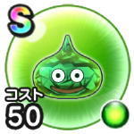

ヒスイスライム
地底探鉱戦闘開始時にたまに敵のデイン属性攻撃でHPを回復する効果を付与こころ最大コスト+4スキルHP回復効果+10%怯え耐性+10%麻痺耐性+10% / 7.5点
くわしい特徴
【ランク特殊効果】 戦闘開始時にたまに敵のデイン属性攻撃でHPを回復する効果を付与こころ最大コスト+4スキルHP回復効果+10%怯え耐性+10%麻痺耐性+10%

地底探鉱戦闘開始時にたまに敵のデイン属性攻撃でHPを回復する効果を付与こころ最大コスト+4スキルHP回復効果+10%怯え耐性+10%麻痺耐性+10% / 7.5点
【ランク特殊効果】 戦闘開始時にたまに敵のデイン属性攻撃でHPを回復する効果を付与こころ最大コスト+4スキルHP回復効果+10%怯え耐性+10%麻痺耐性+10%